# Load Packages
#install.packages(pacman)
pacman::p_load(tidyverse, here)
# Load Data
df1 <- NHANES::NHANES
df1 <- df1 |>
janitor::clean_names()
df <- df1 |>
select(id, survey_yr, gender, age, race1, education, marital_status, hh_income, home_own, home_rooms, poverty, work, weight, height)2 Descriptive Statistics: Graphical Methods
Graphical methods are crucial for understanding data at a glance. Depending on the number and type of variables, we use different graphical techniques. The graphical methods provided here are just some of the available methods for data visualization. There are many others that can be explored in more detail later. This is intended to be a basic introduction to help you get started.
2.1 Graphical Methods for a Single Variable
| Variable Type | Graphical Method | Description |
|---|---|---|
| Categorical (Nominal / Ordinal) | Bar Chart | Shows frequency or proportion of categories |
| Discrete (Integer) | Histogram | Displays the count of values across defined intervals |
| Dot Plot | Shows individual data points for small datasets | |
| Continuous (Double) | Histogram | Shows the frequency distribution of continuous values |
| Box Plot | Displays distribution, including outliers | |
| Density Plot | Visualizes the density function |
2.2 Graphical Methods for Two Variable Visualization
| Categorical (Nominal / Ordinal) | Numeric (Discrete / Continuous) | |
|---|---|---|
| Categorical (Nominal / Ordinal) | Stacked Bar Chart | Grouped Bar Chart |
| Numeric (Discrete / Continuous) | Grouped Bar Chart | Scatter Plot |
2.3 Data Visualization Using R: Introduction to Grammar of Graphics
Data visualization in R can be effectively done using the ggplot2 package, which is included in the popular tidyverse collection of R packages. ggplot2 is based on the Grammar of Graphics, a structured approach that allows you to build plots layer by layer. This grammar provides a framework for describing and creating visualizations by combining different graphical elements. The idea is that any plot can be constructed by breaking it down into components.
The visualisation using ggplot2 package, which follows the philosophy of grammar of graphics, breaks down a plot into several components:
Data: The dataset you’re working with.
Aesthetics: The visual properties (e.g., axes, colors, sizes).
Geometries: The type of plot (e.g., points, bars, lines).
Facets: Dividing the data into subplots.
Scales: Mapping of data values to visual properties.
Coordinates: How data is projected onto the plane (e.g., Cartesian coordinates).
What Happens When You Run ggplot()?
When you run ggplot() in R without specifying any further components, it provides you with a blank “canvas” (or plane) on which you can build your plot. This is like opening a blank sheet of paper to start drawing. Here’s an example:
# Running ggplot without specifying layers
ggplot()
This will simply give you a blank plot. You then need to add layers to specify what the plot will contain.
Aesthetics (aes)
Aesthetic mappings define how data is mapped to visual properties. They include properties such as:
x and y axes: Mapped to variables in your data.
color: Used to differentiate categories.
size: Used to represent magnitude or importance.
For example, when you add aesthetics to ggplot(), it tells R how to map data to the plot:
ggplot(data = df,
mapping = aes(x = height, y = weight))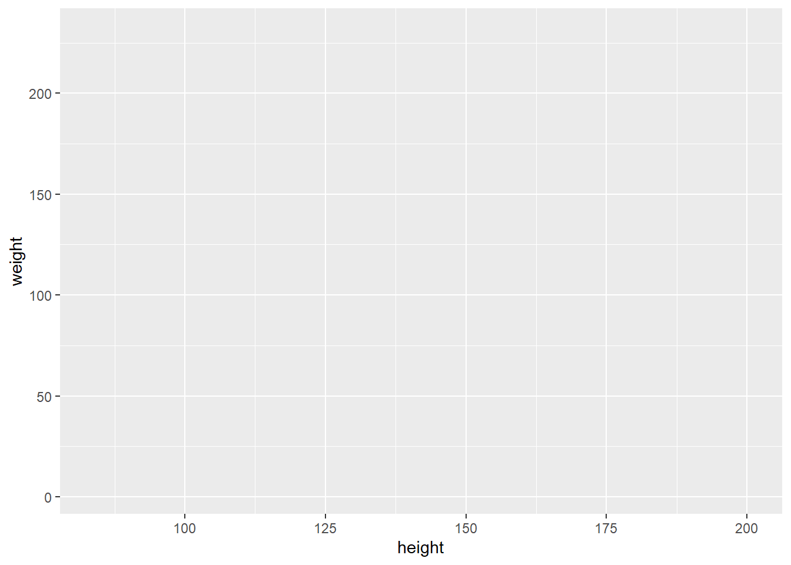
In this example, height is mapped to the x-axis and weight to the y-axis
Layers in ggplot2
The power of ggplot2 lies in its layering system. After creating the base plot with ggplot(), you can add multiple layers.
You add these layers using the + operator
For Example:
# Adding layers to create a plot
ggplot(df, aes(x = height, y = weight)) +
geom_point() +
labs(title = "Height vs Weight",
caption = "Source: NHANES Data") Warning: Removed 366 rows containing missing values or values outside the scale range
(`geom_point()`).
Here’s a breakdown of each layer in the example:
ggplot(df, aes(x = height, y = weight)): This initializes the plot using thedfdataset. Insideaes(), the x-axis is mapped to xvariable (height), and the y-axis is mapped to yvariable (weight). The aes() function defines aesthetic mappings, determining how data is represented visually.geom_point(): This adds a geometric layer, specifically a scatter plot, where each point represents an observation. It visualizes the relationship between x and ylabs(title = "Height vs Weight", caption = "Source: NHANES Data"): This layer adds a title and a caption to the plot, making it more interpretable. The title helps to explain what the plot is displaying.
Each layer builds on the previous one, progressively adding more information to the visualization.
Note
Every geometric layer starts with geom_ in ggplot2.
2.4 Visualising a Single Variable using R
Graphical methods are essential for summarizing and understanding the distribution of a single variable. In this section, we will explore different types of plots for visualizing one variable, based on its type (nominal, ordinal, discrete, or continuous). The key graphical methods include bar charts, boxplots, histograms, and density plots.
2.4.1 Bar Chart
A bar chart is used to represent categorical data (nominal or ordinal). Each bar represents the frequency (or count) of a category. It’s commonly used for visualizing nominal variables like gender or education level.
Example:
# Bar chart example for a nominal variable
ggplot(df, aes(x = gender)) +
geom_bar() +
labs(
title = "Bar Chart of Gender",
x = "Gender",
y = "Count")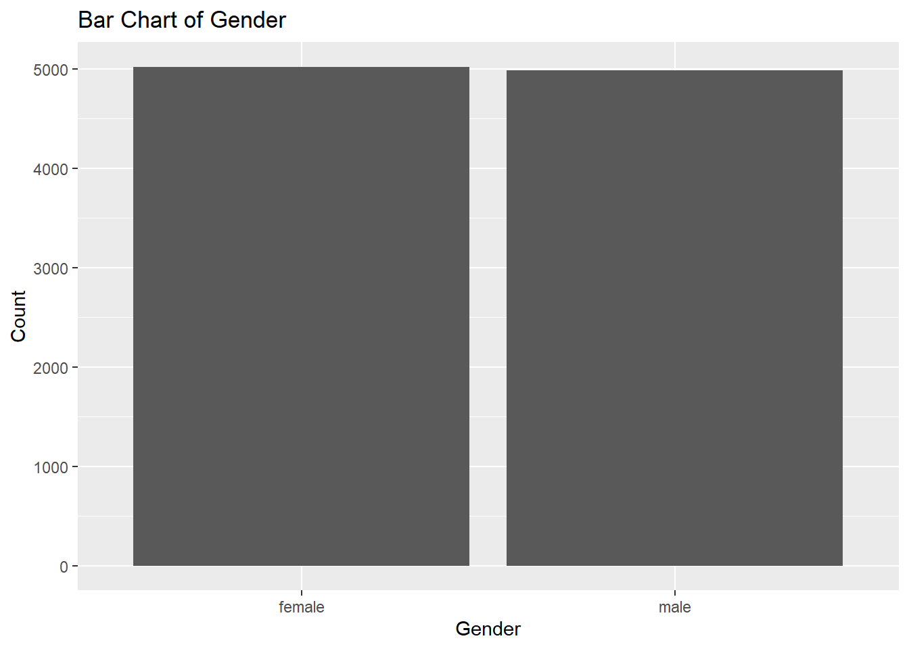
2.4.2 Boxplot
A boxplot is used to represent the distribution of a continuous variable. It shows the median, quartiles, and potential outliers.
Example:
# Boxplot example for a continuous variable
ggplot(df, aes(y = height)) +
geom_boxplot() +
labs(title = "Boxplot of Height")Warning: Removed 353 rows containing non-finite outside the scale range
(`stat_boxplot()`).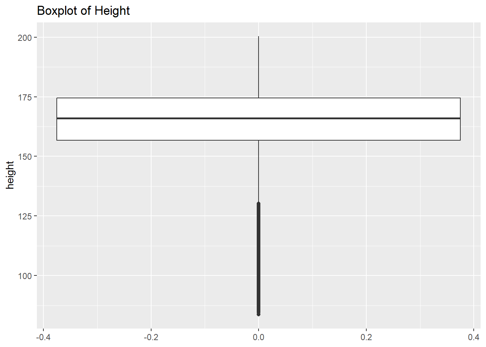
2.4.3 Histogram
A histogram is used to visualize the distribution of a continuous variable by dividing the data into bins and counting the number of observations in each bin. It’s useful for understanding the shape, spread, and central tendency of continuous variables like age or income.
Example:
# Histogram example for a continuous variable
ggplot(df, aes(x = height)) +
geom_histogram() +
labs(title = "Histogram of Height", x = "Height", y = "Frequency")`stat_bin()` using `bins = 30`. Pick better value with `binwidth`.Warning: Removed 353 rows containing non-finite outside the scale range
(`stat_bin()`).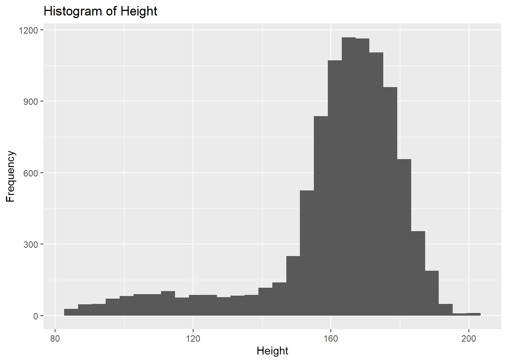
Here the x-axis represents height (a continuous variable), and the y-axis represents the frequency of observations in each height bin.
We can make the histogram more attractive.
ggplot(df, aes(x = height)) +
geom_histogram(binwidth = 2,
fill = "blue",
color = "black") +
labs(title = "Histogram of Height",
x = "Height",
y = "Frequency") +
theme_minimal()Warning: Removed 353 rows containing non-finite outside the scale range
(`stat_bin()`).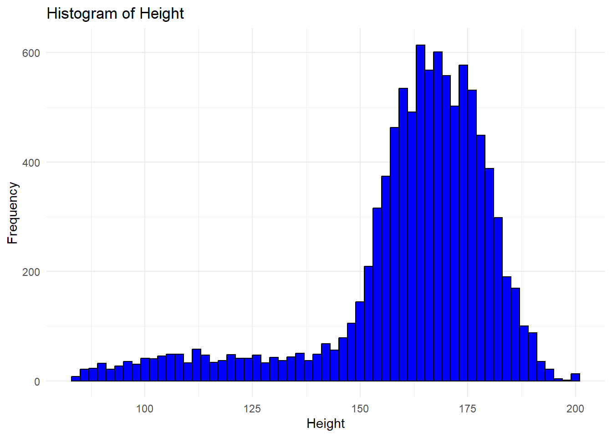
2.4.4 Density Plot
A density plot is a smoothed version of a histogram, used for continuous data. It provides an estimate of the probability distribution of a continuous variable.
# Density plot example for a continuous variable
ggplot(df, aes(x = height)) +
geom_density(
alpha = 0.5) +
labs(
title = "Density Plot of Height",
x = "Height") +
theme_minimal()Warning: Removed 353 rows containing non-finite outside the scale range
(`stat_density()`).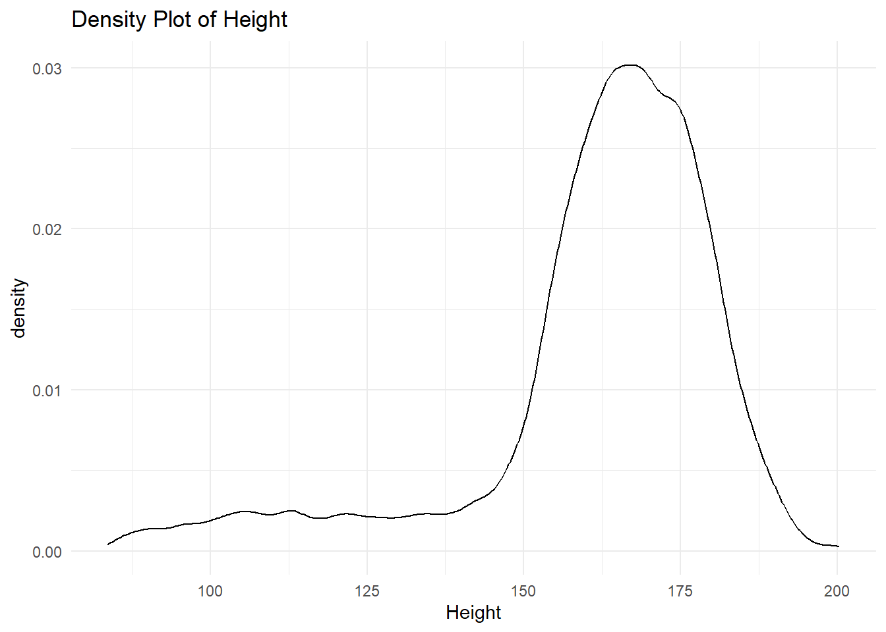
We can represent the area under the curve using any color.
# Density plot example for a continuous variable
ggplot(df, aes(x = height)) +
geom_density(
fill = "green",
alpha = 0.5) +
labs(
title = "Density Plot of Height",
x = "Height") +
theme_minimal()Warning: Removed 353 rows containing non-finite outside the scale range
(`stat_density()`).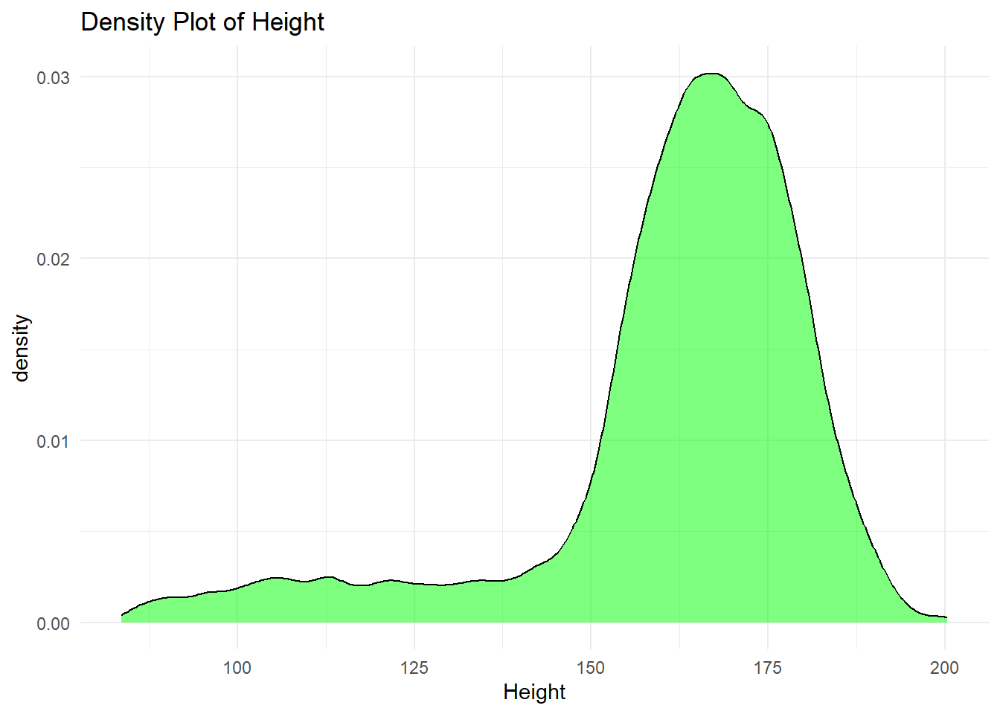
2.4.5 Combining Multiple Geometries: Overlaying Histogram and Density Plot
One of the strengths of ggplot2 is its ability to add multiple geometric shapes (geoms) to a single plot. For example, you can overlay a density plot on top of a histogram to visualize both the frequency distribution and the smoothed probability distribution of a continuous variable in a single canvas.
Example: Histogram and Density Plot Together
# Combining histogram and density plot
library(ggplot2)
ggplot(df, aes(x = height)) +
# Histogram with density scaling
geom_histogram(
aes(y = after_stat(density)), # Normalize the histogram to show density instead of counts
binwidth = 2, # Sets the bin width for the histogram
fill = "blue", # Fills the bars with blue color
color = "black", # Outlines the bars with black
alpha = 0.6 # Adds transparency to the bars
) +
# Density plot
geom_density(
aes(y = after_stat(density)), # Ensures the y-axis of density is consistent
color = "red", # The density plot will be red
linewidth = 1 # Thickness of the density line
) +
# Labels
labs(
title = "Histogram and Density Plot of Height", # Title for the plot
x = "Height", # X-axis label
y = "Density" # Y-axis label
) +
theme_minimal() # Apply a clean themeWarning: Removed 353 rows containing non-finite outside the scale range
(`stat_bin()`).Warning: Removed 353 rows containing non-finite outside the scale range
(`stat_density()`).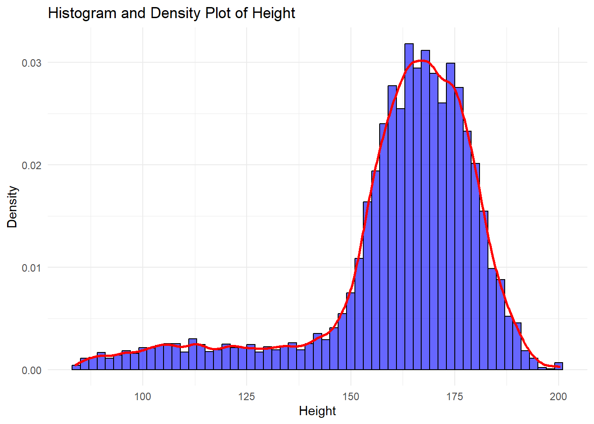
2.5 Visualising Two Variables using R
When working with two variables, visualizing the relationship between them helps reveal patterns, associations, or differences. The appropriate plot depends on the types of variables involved (categorical, continuous, or a combination). In this section, we will explore different graphical methods for visualizing two variables: stacked bar charts, grouped bar charts, scatter plots, box plots by category, and regression lines with standard error.
2.5.1 Stacked Bar Chart
A stacked bar chart is used when both variables are categorical. It displays the distribution of one variable while stacking the bars based on the categories of the second variable.
Example:
# Stacked bar chart example for two categorical variables
ggplot(df, aes(x = gender, fill = race1)) +
geom_bar(position = "stack") +
labs(title = "Stacked Bar Chart of Gender by Race", x = "Gender", y = "Count", fill = "Race")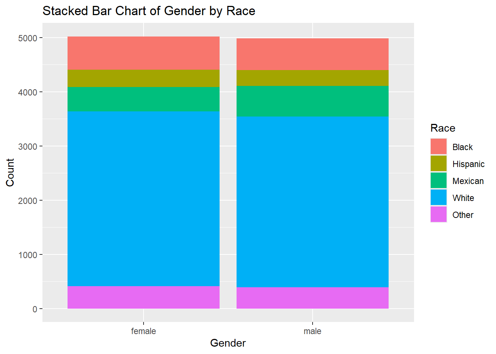
2.5.2 Grouped Bar Chart
A grouped bar chart is another option for visualizing two categorical variables. Instead of stacking the bars, it places bars for each category side-by-side, allowing for a clearer comparison between categories.
Example:
# Grouped bar chart example for two categorical variables
ggplot(df, aes(x = race1, fill = gender)) +
geom_bar(position = "dodge") +
labs(title = "Grouped Bar Chart of Gender by Race", x = "Gender", y = "Count", fill = "Race")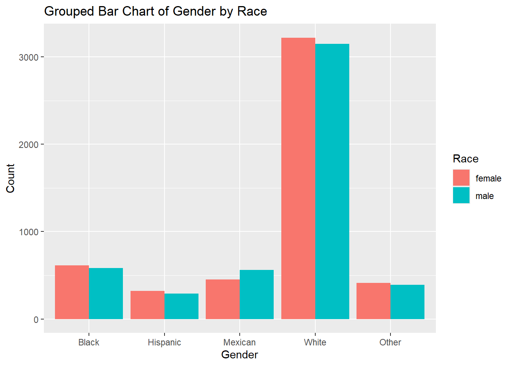
2.5.3 Scatter Plot
A scatter plot is used to visualize the relationship between two continuous variables. Each point on the plot represents an observation, and patterns like clusters, trends, or outliers can be detected.
Example:
# Scatter plot example for two continuous variables
ggplot(df, aes(x = height, y = weight)) +
geom_point() +
labs(title = "Height vs Weight",
caption = "Source: NHANES Data")Warning: Removed 366 rows containing missing values or values outside the scale range
(`geom_point()`).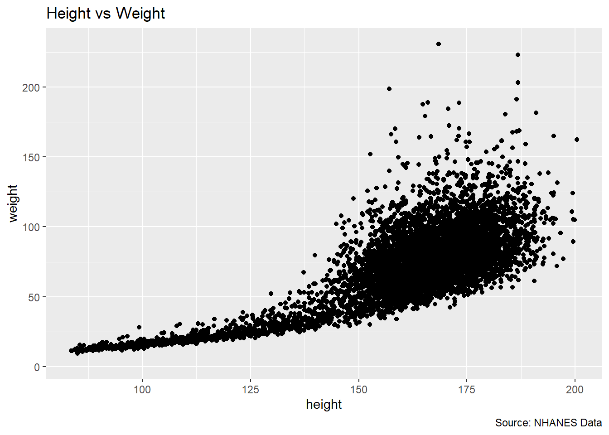
2.5.4 Box Plot by Category
A box plot by category is useful when comparing the distribution of a continuous variable across different categories of a categorical variable. It shows the median, quartiles, and potential outliers within each category.
Example:
# Box plot example for a continuous variable by category
ggplot(df, aes(x = gender, y = height)) +
geom_boxplot() +
labs(title = "Box Plot of Height by Gender", x = "Gender", y = "Height")Warning: Removed 353 rows containing non-finite outside the scale range
(`stat_boxplot()`).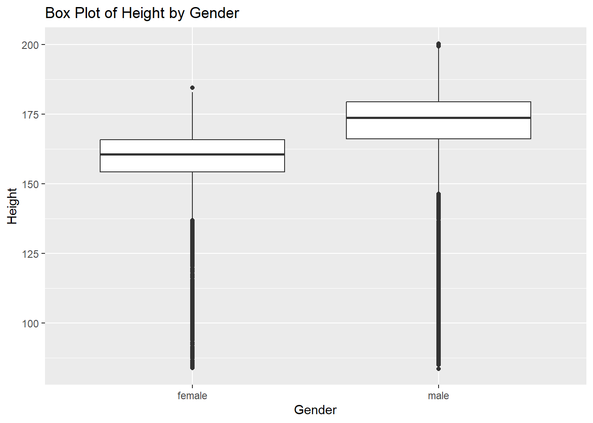
2.5.5 Combining Multiple Geometries: Scatter Plot with Regression Line
A scatter plot with a regression line helps visualize the relationship between two continuous variables. Adding a regression line shows the trend, while the standard error (SE) band around the line indicates the uncertainty in the estimate of the relationship.
While regression is an inferential method (used for making predictions or understanding relationships), the purpose of this example is to demonstrate how multiple geometries can be combined when visualizing two variables.
Example:
# Scatter plot with regression line and SE
ggplot(df, aes(x = height, y = weight)) +
geom_point(color = "blue", alpha = 0.6) + # Add scatter plot points
geom_smooth(method = "lm", # Add a regression line
color = "red", # Set the color of the line
se = TRUE, # Add the SE band (uncertainty)
fill = "lightgray", # Color of the SE band
size = 1) + # Set thickness of the line
labs(
title = "Scatter Plot with Regression Line and SE Band", # Title
x = "Height (cm)", # X-axis label
y = "Weight (kg)" # Y-axis label
) +
theme_minimal() # Apply a clean themeWarning: Using `size` aesthetic for lines was deprecated in ggplot2 3.4.0.
ℹ Please use `linewidth` instead.`geom_smooth()` using formula = 'y ~ x'Warning: Removed 366 rows containing non-finite outside the scale range
(`stat_smooth()`).Warning: Removed 366 rows containing missing values or values outside the scale range
(`geom_point()`).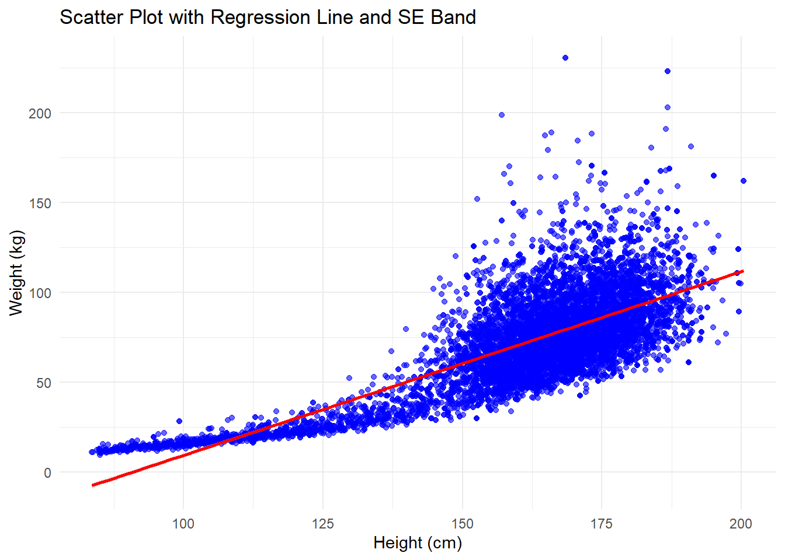
2.6 Visualizing Three Variables using R
When working with three variables, we can extend basic plots like scatter plots by adding a third variable as an aesthetic element such as color or fill. This allows us to represent more dimensions of the data in a single plot. One common approach is to use color to represent a categorical or continuous variable in a scatter plot.
Example: Scatter Plot with Color for a Third Variable
In this example, we’ll create a scatter plot of two continuous variables and use color to represent a third categorical variable. This can help identify patterns or groupings based on the third variable.
Example
# Scatter plot with color representing a third variable
ggplot(df,
aes(x = height,
y = weight,
color = race1)) +
geom_point(size = 1, alpha = 0.5) +
labs(title = "Scatter Plot of Height vs Weight by Race",
x = "Height", y = "Weight", color = "Race")Warning: Removed 366 rows containing missing values or values outside the scale range
(`geom_point()`).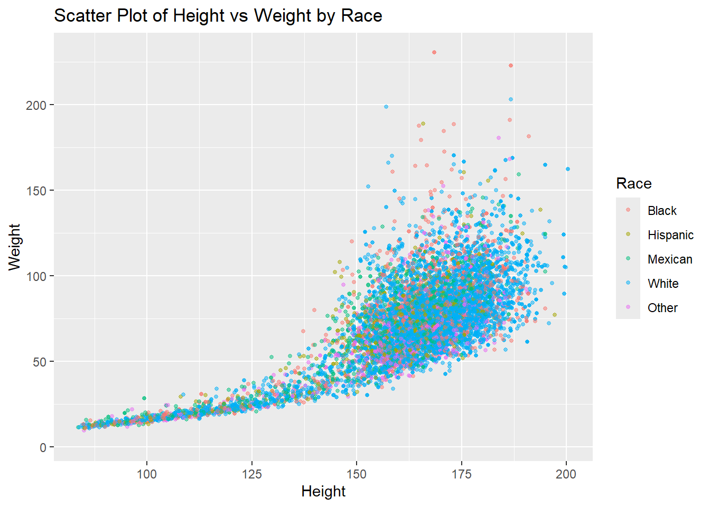
Another Way
# Scatter plot with color representing a third variable
ggplot(df,
aes(x = height,
y = weight)) +
geom_point(size = 1) +
facet_wrap(~race1)+
labs(title = "Scatter Plot of Height vs Weight by Race",
x = "Height", y = "Weight", color = "Race")Warning: Removed 366 rows containing missing values or values outside the scale range
(`geom_point()`).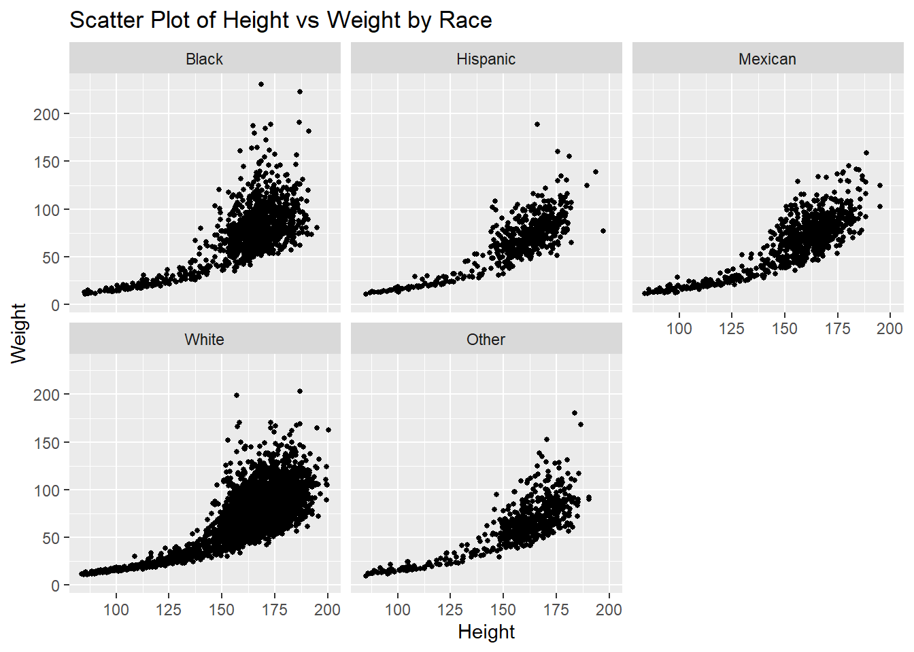
2.7 Visualizing Four Variables using R
To visualize four variables, we can use a combination of color (or fill) for the third variable and facet wrapping for the fourth variable. Facet wrapping creates a series of smaller plots based on the levels of a categorical variable, allowing us to compare the relationships across different subgroups.
Example: Scatter Plot with Color and Facet Wrap
In this example, we’ll use a scatter plot with color representing a third variable, and facet wrapping to display different plots for each level of the fourth variable.
# Scatter plot with color and facet wrap for a fourth variable
ggplot(df,
aes(x = height,
y = weight,
color = gender)) +
geom_point(size = 1) +
facet_wrap(~race1)+
labs(title = "Scatter Plot of Height vs Weight by Race and gender",
x = "Height", y = "Weight", color = "Gender")Warning: Removed 366 rows containing missing values or values outside the scale range
(`geom_point()`).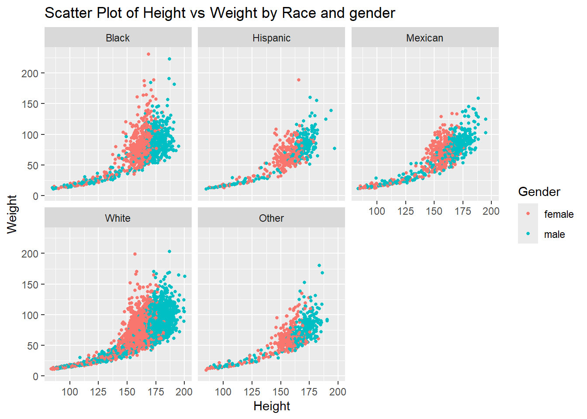